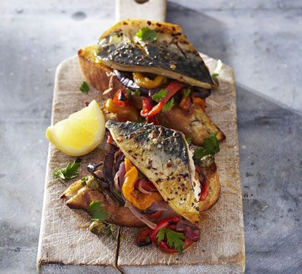
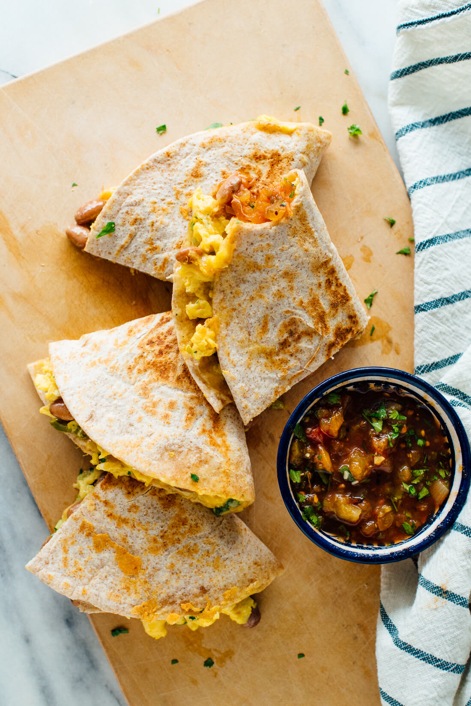
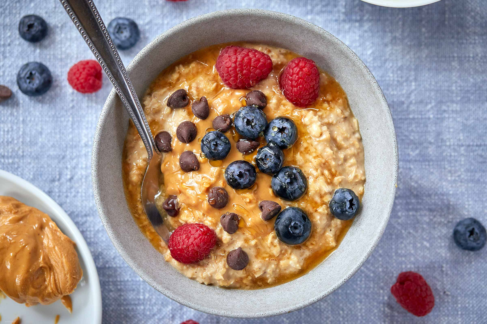

Meat/Fish
Mackrel Toast
Ingredients
- 2 slices of bread
- 1/4 avocado
- 2tbs lemon juice
- 125g of mackrel in brine other tinned fish such as salmon will also work
- 1 medium tomato sliced
- 1/2 cup rocket
Macros
- Energy---657cals
- Protein---35g
- Fat---34g
- Carbohydrates---49g
- Sat.Fat---6.7g
- Sugar---8.4g
- Fibre---10g
Cooking Instructions
- Toast bread
- Mash avocado with the lemon juice and season with salt & pepper
- Spread avocado on the toast and add fish, tomato and rocket with a final squeeze of lemon
Vegetarian
Breakfast Quesadillas
Ingredients
- 1 olive oil spray
- 1 medium tomato diced
- 1 chilli finely chopped
- 1/2 onion finely chopped
- 1 spring onion sliced
- 4 large eggs
- 1 tbs cheese finely grated
- 2 tortilla wraps
Macros
- Energy---648cals
- Protein---38.6g
- Fat---31g
- Carbohydrates---45g
- Sat.Fat---11g
- Sugar---10g
- Fibre---15g
Cooking Instructions
- Heat a frypan and saute tomato, chilli, onion and spring onion with the oil for 3 mins
- In a bowl, whisk eggs and cheese and eason with salt and pepper
- Pour mixture into the pan with the tomato mixture and cook for 2 mins then set aside
- Heat a second pan and toast one of the wraps for 2 mins
- Add half of the mixture to the wrap and fold in half. Toast both sides
- Repeat this for other wrap with remaining mixture
Vegan
Peanut Butter Overnight Oats
Ingredients
- 1 1/2 cup rolled oats
- 1/2 cup vanilla protein powder
- 1 cup milk
- 2 tsp hot water
- 2 tsp maple syrup (or honey)
- 2 tbs peanut butter
- 12 fresh or frozen raspberries
Macros
- Energy---590cals
- Protein---42g
- Fat---20g
- Carbohydrates---54g
- Sat.Fat---5g
- Sugar---13g
- Fibre---11g
Cooking Instructions
- Combine oats, protein, milk and maple syrup in a bowl
- Combine peanut butter with hot water to soften and swirl this through the oats
- Cover bowl with cling film and refrigerate overnight
- Top with berries to serve